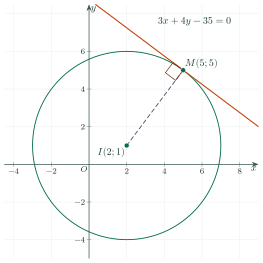

Circles in the Coordinate PlaneĐường tròn trong mặt phẳng tọa độ
Grade 10 · Topic: Coordinate Geometry in the PlaneLớp 10 · Chủ đề: Phương pháp tọa độ trong mặt phẳng
1Lesson IntroductionGiới thiệu bài học
Learning goalsMục tiêu bài học
By the end of this lesson you can:
Sau bài học này, em có thể:
recognise the equation of a circle and read its centre and radius;
nhận biết phương trình đường tròn, xác định tâm và bán kính;
write the equation of a circle from given data (centre and point, diameter, three points);
viết phương trình đường tròn khi biết tâm và một điểm, đường kính, ba điểm;
write a tangent line to a circle and decide the position of a line and a circle;
viết tiếp tuyến của đường tròn và xét vị trí tương đối giữa đường thẳng và đường tròn;
solve real problems on coverage areas and chords.
giải bài toán thực tế về vùng phủ sóng, dây cung.
2Mathematical VocabularyTừ vựng Toán học
equation of a circle – \((x-a)^2+(y-b)^2=R^2\): centre \(I(a;b)\), radius \(R\).
phương trình đường tròn – \((x-a)^2+(y-b)^2=R^2\): tâm \(I(a;b)\), bán kính \(R\).
tangent line to a circle – a line with exactly one common point with the circle; it is perpendicular to the radius at that point.
tiếp tuyến của đường tròn – đường thẳng có đúng một điểm chung với đường tròn; vuông góc với bán kính tại tiếp điểm.
chord – a segment joining two points of a circle.
dây cung – đoạn thẳng nối hai điểm của đường tròn.
3Useful English PhrasesCụm từ tiếng Anh thường gặp
The centre is \(I(2;-1)\) and the radius is three.
Tâm là \(I(2;-1)\), bán kính bằng 3.
The tangent is perpendicular to the radius.
Tiếp tuyến vuông góc với bán kính tại tiếp điểm.
The line is tangent to the circle.
Đường thẳng tiếp xúc với đường tròn.
Compare the distance with the radius.
So sánh khoảng cách với bán kính.
The line cuts the circle at two points.
Đường thẳng cắt đường tròn tại hai điểm.
4Prerequisite ReviewÔn tập kiến thức nền
From Bài 10: \(AB=\sqrt{(x_B-x_A)^2+(y_B-y_A)^2}\). From Bài 20: \(d(M,\Delta)=\dfrac{|ax_0+by_0+c|}{\sqrt{a^2+b^2}}\). Grade 9: a circle is the set of points at distance \(R\) from the centre.
Từ Bài 10: \(AB=\sqrt{(x_B-x_A)^2+(y_B-y_A)^2}\). Từ Bài 20: \(d(M,\Delta)=\dfrac{|ax_0+by_0+c|}{\sqrt{a^2+b^2}}\). Lớp 9: đường tròn là tập hợp các điểm cách tâm một khoảng \(R\).
5TheoryLý thuyết
5.1 Equation of a circlePhương trình đường tròn
Two formsHai dạng
\(M(x;y)\) lies on the circle with centre \(I(a;b)\), radius \(R\) \(\iff IM=R\iff(x-a)^2+(y-b)^2=R^2\).
\(M(x;y)\) thuộc đường tròn tâm \(I(a;b)\), bán kính \(R\) \(\iff IM=R\iff(x-a)^2+(y-b)^2=R^2\).
Expanding: \(x^2+y^2-2ax-2by+c=0\) with \(c=a^2+b^2-R^2\). Conversely, this equation is a circle only if \(a^2+b^2-c\gt0\); then \(I(a;b)\), \(R=\sqrt{a^2+b^2-c}\).
Khai triển: \(x^2+y^2-2ax-2by+c=0\) với \(c=a^2+b^2-R^2\). Ngược lại, phương trình này là đường tròn khi và chỉ khi \(a^2+b^2-c\gt0\); khi đó \(I(a;b)\), \(R=\sqrt{a^2+b^2-c}\).
Watch out!Lưu ý
Read the centre with the opposite signs: \((x+1)^2+(y-3)^2=16\) has \(I(-1;3)\). A circle equation has the same coefficient for \(x^2\) and \(y^2\) and no \(xy\) term.
Đọc tâm với dấu ngược lại: \((x+1)^2+(y-3)^2=16\) có \(I(-1;3)\). Phương trình đường tròn có hệ số của \(x^2\), \(y^2\) bằng nhau và không có hạng tử \(xy\).
5.2 Tangent lines; a line and a circleTiếp tuyến; đường thẳng và đường tròn
RulesQuy tắc
The tangent at \(M_0(x_0;y_0)\) of the circle with centre \(I(a;b)\) passes through \(M_0\) with normal vector \(\overrightarrow{IM_0}\): \((x_0-a)(x-x_0)+(y_0-b)(y-y_0)=0\).
Tiếp tuyến tại \(M_0(x_0;y_0)\) của đường tròn tâm \(I(a;b)\) đi qua \(M_0\), nhận \(\overrightarrow{IM_0}\) làm vectơ pháp tuyến: \((x_0-a)(x-x_0)+(y_0-b)(y-y_0)=0\).
Let \(d=d(I,\Delta)\). \(d\lt R\): \(\Delta\) cuts the circle at two points (chord length \(2\sqrt{R^2-d^2}\)); \(d=R\): \(\Delta\) is tangent; \(d\gt R\): no common point.
Đặt \(d=d(I,\Delta)\). \(d\lt R\): \(\Delta\) cắt đường tròn tại hai điểm (dây cung dài \(2\sqrt{R^2-d^2}\)); \(d=R\): \(\Delta\) tiếp xúc; \(d\gt R\): không có điểm chung.

6Worked ExamplesVí dụ có lời giải
ExampleVí dụ 1BasicCơ bản – Centre and radiusTâm và bán kính
Find the centre and radius: a) \((x+1)^2+(y-3)^2=16\); b) \(x^2+y^2-4x+6y-3=0\).
Tìm tâm và bán kính: a) \((x+1)^2+(y-3)^2=16\); b) \(x^2+y^2-4x+6y-3=0\).
Analysis: b) \(-2a=-4\), \(-2b=6\), \(c=-3\).
Phân tích: b) \(-2a=-4\), \(-2b=6\), \(c=-3\).
a) \(I(-1;3)\), \(R=4\).
a) \(I(-1;3)\), \(R=4\).
b) \(a=2\), \(b=-3\); \(a^2+b^2-c=4+9+3=16\gt0\): \(I(2;-3)\), \(R=4\).
b) \(a=2\), \(b=-3\); \(a^2+b^2-c=4+9+3=16\gt0\): \(I(2;-3)\), \(R=4\).
a) \(I(-1;3)\), \(R=4\); b) \(I(2;-3)\), \(R=4\).
a) \(I(-1;3)\), \(R=4\); b) \(I(2;-3)\), \(R=4\).
ExampleVí dụ 2BasicCơ bản – Centre and a pointBiết tâm và một điểm
Write the equation of the circle with centre \(I(1;-2)\) passing through \(A(4;2)\).
Viết phương trình đường tròn tâm \(I(1;-2)\) và đi qua \(A(4;2)\).
Analysis: \(R=IA\).
Phân tích: \(R=IA\).
\(\overrightarrow{IA}=(3;4)\), \(R^2=9+16=25\).
\(\overrightarrow{IA}=(3;4)\), \(R^2=9+16=25\).
\((x-1)^2+(y+2)^2=25\).
\((x-1)^2+(y+2)^2=25\).
ExampleVí dụ 3IntermediateTrung bình – Circle through three pointsĐường tròn qua ba điểm
Write the equation of the circle through \(A(1;2)\), \(B(5;2)\), \(C(1;-2)\).
Viết phương trình đường tròn đi qua ba điểm \(A(1;2)\), \(B(5;2)\), \(C(1;-2)\).
Analysis: Use \(x^2+y^2-2ax-2by+c=0\) and substitute the three points.
Phân tích: Dùng dạng \(x^2+y^2-2ax-2by+c=0\), thay tọa độ ba điểm.
\(A\): \(5-2a-4b+c=0\); \(B\): \(29-10a-4b+c=0\); \(C\): \(5-2a+4b+c=0\).
\(A\): \(5-2a-4b+c=0\); \(B\): \(29-10a-4b+c=0\); \(C\): \(5-2a+4b+c=0\).
\(A-C\): \(b=0\); \(B-A\): \(24-8a=0\Rightarrow a=3\); then \(c=1\).
Trừ \(A\) cho \(C\): \(b=0\); trừ \(B\) cho \(A\): \(24-8a=0\Rightarrow a=3\); suy ra \(c=1\).
\(I(3;0)\), \(R^2=9-1=8\). (Here \(\widehat{BAC}=90^\circ\), so \(BC\) is a diameter.)
\(I(3;0)\), \(R^2=9-1=8\). (Ở đây \(\widehat{BAC}=90^\circ\) nên \(BC\) là đường kính.)
\(x^2+y^2-6x+1=0\), i.e. \((x-3)^2+y^2=8\).
\(x^2+y^2-6x+1=0\), tức \((x-3)^2+y^2=8\).
ExampleVí dụ 4IntermediateTrung bình – Tangent linesTiếp tuyến
For \((C): (x-2)^2+(y-1)^2=25\): a) write the tangent at \(M(5;5)\); b) show that \(\Delta: 3x-4y+23=0\) is tangent to \((C)\).
Cho \((C): (x-2)^2+(y-1)^2=25\). a) Viết tiếp tuyến tại \(M(5;5)\). b) Chứng minh \(\Delta: 3x-4y+23=0\) tiếp xúc với \((C)\).
Analysis: a) normal vector \(\overrightarrow{IM}\); b) compare \(d(I,\Delta)\) with \(R=5\).
Phân tích: a) vectơ pháp tuyến \(\overrightarrow{IM}\); b) so sánh \(d(I,\Delta)\) với \(R=5\).
a) \((5-2)^2+(5-1)^2=25\) ✓; \(3(x-5)+4(y-5)=0\iff3x+4y-35=0\).
a) \((5-2)^2+(5-1)^2=25\) ✓; \(3(x-5)+4(y-5)=0\iff3x+4y-35=0\).
b) \(d(I,\Delta)=\dfrac{|6-4+23|}{5}=5=R\).
b) \(d(I,\Delta)=\dfrac{|6-4+23|}{5}=5=R\).
a) \(3x+4y-35=0\); b) \(d=R\), so \(\Delta\) is tangent.
a) \(3x+4y-35=0\); b) \(d=R\) nên \(\Delta\) tiếp xúc với \((C)\).
ExampleVí dụ 5AdvancedNâng cao – Signal along a roadSóng điện thoại dọc con đường
A mobile mast at \(I(2;3)\) (unit 1 km) covers a disc of radius 5 km. A straight road runs along \(d: x-y+6=0\). How long is the part of the road with signal?
Một trạm phát sóng đặt tại \(I(2;3)\) (đơn vị 1 km) phủ sóng một hình tròn bán kính 5 km. Một con đường thẳng chạy theo \(d: x-y+6=0\). Đoạn đường có sóng dài bao nhiêu?
Analysis: The covered part is the chord cut by \(d\): length \(2\sqrt{R^2-h^2}\), \(h=d(I,d)\).
Phân tích: Đoạn có sóng là dây cung do \(d\) cắt: dài \(2\sqrt{R^2-h^2}\) với \(h=d(I,d)\).
\(h=\dfrac{|2-3+6|}{\sqrt2}=\dfrac5{\sqrt2}\lt5\): the road enters the area.
\(h=\dfrac{|2-3+6|}{\sqrt2}=\dfrac5{\sqrt2}\lt5\): con đường đi vào vùng phủ sóng.
Length \(=2\sqrt{25-\frac{25}2}=2\cdot\dfrac5{\sqrt2}=5\sqrt2\approx7{,}07\) km.
Độ dài \(=2\sqrt{25-\frac{25}2}=2\cdot\dfrac5{\sqrt2}=5\sqrt2\approx7{,}07\) km.
\(5\sqrt2\approx7{,}07\) km.
\(5\sqrt2\approx7{,}07\) km.
7PracticeBài tập luyện tập
A. Multiple ChoiceA. Trắc nghiệm nhiều lựa chọn
The circle \((x-2)^2+(y+3)^2=16\) has…
Đường tròn \((x-2)^2+(y+3)^2=16\) có…
Answer: b. Centre \((a;b)\), radius \(R=\sqrt{16}\).
Đáp án b. Tâm \((a;b)=(2;-3)\), bán kính \(R=\sqrt{16}=4\).
The circle \(x^2+y^2-2x-4y-4=0\) has…
Đường tròn \(x^2+y^2-2x-4y-4=0\) có…
Answer: c. \(a=1\), \(b=2\), \(R=\sqrt{a^2+b^2-c}\).
Đáp án c. \(a=1\), \(b=2\), \(R=\sqrt{a^2+b^2-c}=\sqrt{9}=3\).
The circle with centre \(I(1;\,2)\) through \(A(4;\,6)\) is…
Đường tròn tâm \(I(1;\,2)\) đi qua \(A(4;\,6)\) là…
Answer: d. \(R^2=IA^2=25\).
Đáp án d. \(R^2=IA^2=25\).
B. True or FalseB. Đúng hoặc sai
\(x^2+y^2-2x+4y+6=0\) is the equation of a circle.
\(x^2+y^2-2x+4y+6=0\) là phương trình của một đường tròn.
\(a^2+b^2-c=-1\).
\(a^2+b^2-c=-1\)\(\le0\).
The line \(3x+4y+14=0\) is tangent to \((x-1)^2+(y-2)^2=25\).
Đường thẳng \(3x+4y+14=0\) tiếp xúc với đường tròn \((x-1)^2+(y-2)^2=25\).
\(d(I,\Delta)=5\), \(R=5\).
\(d(I,\Delta)=5\), \(R=5\).
C. Short AnswerC. Trả lời ngắn
Find the radius of the circle \(x^2+y^2+6x-8y=0\).
Tìm bán kính của đường tròn \(x^2+y^2+6x-8y=0\).
Enter a number.
Nhập một số.
\(R=\sqrt{a^2+b^2-c}\).
\(R=\sqrt{9+16-(0)}=5\).
A mast at \(I(2;\,1)\) (unit 1 km) covers a disc of radius 5 km. How many kilometres of the road \(3x+4y+5=0\) have signal?
Một trạm phát sóng tại \(I(2;\,1)\) (đơn vị 1 km) phủ sóng hình tròn bán kính 5 km. Con đường \(3x+4y+5=0\) có bao nhiêu kilômét được phủ sóng?
Enter a number.
Nhập một số.
\(d=3\), chord \(2\sqrt{R^2-d^2}\).
\(d(I,\Delta)=3\), dây cung dài \(2\sqrt{25-9}=8\).
A. Multiple ChoiceA. Trắc nghiệm nhiều lựa chọn
The circle \((x+1)^2+(y-4)^2=9\) has…
Đường tròn \((x+1)^2+(y-4)^2=9\) có…
Answer: b. Centre \((a;b)\), radius \(R=\sqrt{9}\).
Đáp án b. Tâm \((a;b)=(-1;4)\), bán kính \(R=\sqrt{9}=3\).
The circle \(x^2+y^2+4x-6y-12=0\) has…
Đường tròn \(x^2+y^2+4x-6y-12=0\) có…
Answer: a. \(a=-2\), \(b=3\), \(R=\sqrt{a^2+b^2-c}\).
Đáp án a. \(a=-2\), \(b=3\), \(R=\sqrt{a^2+b^2-c}=\sqrt{25}=5\).
The circle with centre \(I(-2;\,1)\) through \(A(3;\,-11)\) is…
Đường tròn tâm \(I(-2;\,1)\) đi qua \(A(3;\,-11)\) là…
Answer: a. \(R^2=IA^2=169\).
Đáp án a. \(R^2=IA^2=169\).
B. True or FalseB. Đúng hoặc sai
\(x^2+y^2-4x+2y+1=0\) is the equation of a circle.
\(x^2+y^2-4x+2y+1=0\) là phương trình của một đường tròn.
\(a^2+b^2-c=4\).
\(a^2+b^2-c=4\)\(\gt0\).
The line \(4x-3y+10=0\) is tangent to \(x^2+(y-3)^2=16\).
Đường thẳng \(4x-3y+10=0\) tiếp xúc với đường tròn \(x^2+(y-3)^2=16\).
\(d(I,\Delta)=\dfrac{1}{5}\), \(R=4\).
\(d(I,\Delta)=\dfrac{1}{5}\), \(R=4\).
C. Short AnswerC. Trả lời ngắn
Find the radius of the circle \(x^2+y^2-10x+24y=0\).
Tìm bán kính của đường tròn \(x^2+y^2-10x+24y=0\).
Enter a number.
Nhập một số.
\(R=\sqrt{a^2+b^2-c}\).
\(R=\sqrt{25+144-(0)}=13\).
A mast at \(I(1;\,1)\) (unit 1 km) covers a disc of radius 13 km. How many kilometres of the road \(5x+12y+48=0\) have signal?
Một trạm phát sóng tại \(I(1;\,1)\) (đơn vị 1 km) phủ sóng hình tròn bán kính 13 km. Con đường \(5x+12y+48=0\) có bao nhiêu kilômét được phủ sóng?
Enter a number.
Nhập một số.
\(d=5\), chord \(2\sqrt{R^2-d^2}\).
\(d(I,\Delta)=5\), dây cung dài \(2\sqrt{169-25}=24\).
A. Multiple ChoiceA. Trắc nghiệm nhiều lựa chọn
The circle \((x-3)^2+y^2=25\) has…
Đường tròn \((x-3)^2+y^2=25\) có…
Answer: d. Centre \((a;b)\), radius \(R=\sqrt{25}\).
Đáp án d. Tâm \((a;b)=(3;0)\), bán kính \(R=\sqrt{25}=5\).
The circle \(x^2+y^2-8x+2y+13=0\) has…
Đường tròn \(x^2+y^2-8x+2y+13=0\) có…
Answer: a. \(a=4\), \(b=-1\), \(R=\sqrt{a^2+b^2-c}\).
Đáp án a. \(a=4\), \(b=-1\), \(R=\sqrt{a^2+b^2-c}=\sqrt{4}=2\).
The circle with centre \(I(0;\,-3)\) through \(A(6;\,5)\) is…
Đường tròn tâm \(I(0;\,-3)\) đi qua \(A(6;\,5)\) là…
Answer: a. \(R^2=IA^2=100\).
Đáp án a. \(R^2=IA^2=100\).
B. True or FalseB. Đúng hoặc sai
\(x^2+y^2+2x-6y+15=0\) is the equation of a circle.
\(x^2+y^2+2x-6y+15=0\) là phương trình của một đường tròn.
\(a^2+b^2-c=-5\).
\(a^2+b^2-c=-5\)\(\le0\).
The line \(y-4=0\) is tangent to \((x+1)^2+(y-2)^2=4\).
Đường thẳng \(y-4=0\) tiếp xúc với đường tròn \((x+1)^2+(y-2)^2=4\).
\(d(I,\Delta)=2\), \(R=2\).
\(d(I,\Delta)=2\), \(R=2\).
C. Short AnswerC. Trả lời ngắn
Find the radius of the circle \(x^2+y^2-6x+8y-11=0\).
Tìm bán kính của đường tròn \(x^2+y^2-6x+8y-11=0\).
Enter a number.
Nhập một số.
\(R=\sqrt{a^2+b^2-c}\).
\(R=\sqrt{9+16-(-11)}=6\).
A mast at \(I(3;\,-1)\) (unit 1 km) covers a disc of radius 10 km. How many kilometres of the road \(3x-4y+17=0\) have signal?
Một trạm phát sóng tại \(I(3;\,-1)\) (đơn vị 1 km) phủ sóng hình tròn bán kính 10 km. Con đường \(3x-4y+17=0\) có bao nhiêu kilômét được phủ sóng?
Enter a number.
Nhập một số.
\(d=6\), chord \(2\sqrt{R^2-d^2}\).
\(d(I,\Delta)=6\), dây cung dài \(2\sqrt{100-36}=16\).
D. Self-practice: Multiple ChoiceD. Tự luyện: trắc nghiệm
The circle \((x-4)^2+(y+2)^2=25\) has…
Đường tròn \((x-4)^2+(y+2)^2=25\) có…
Answer: b. \((x-a)^2+(y-b)^2=R^2\): centre \((a;b)\), radius \(R\).
Đáp án b. \((x-a)^2+(y-b)^2=R^2\) có tâm \(I(a;b)\), bán kính \(R\).
The circle \(x^2+y^2-8x+2y-8=0\) has centre and radius…
Đường tròn \(x^2+y^2-8x+2y-8=0\) có tâm và bán kính…
Answer: a. \(a=4\), \(b=-1\), \(R=\sqrt{a^2+b^2-c}=\sqrt{25}\).
Đáp án a. \(-2a=-8\Rightarrow a=4\); \(-2b=2\Rightarrow b=-1\); \(R=\sqrt{a^2+b^2-c}=\sqrt{25}=5\).
The circle with centre \(I(-1;\,1)\) through \(A(3;\,-3)\) is…
Đường tròn tâm \(I(-1;\,1)\) và đi qua \(A(3;\,-3)\) có phương trình…
Answer: c. \(R^2=IA^2=32\).
Đáp án c. \(R^2=IA^2=(4)^2+(-4)^2=32\).
The circle with diameter \(AB\), \(A(-3;\,3)\), \(B(3;\,5)\) is…
Đường tròn đường kính \(AB\) với \(A(-3;\,3)\), \(B(3;\,5)\) có phương trình…
Answer: c. Centre = midpoint \(I(0;\,4)\); \(R^2=\dfrac{AB^2}{4}=10\).
Đáp án c. Tâm là trung điểm \(I(0;\,4)\); \(R^2=\dfrac{AB^2}{4}=10\).
The tangent to \((x-1)^2+(y+1)^2=5\) at \(M(2;\,1)\) is…
Tiếp tuyến của đường tròn \((x-1)^2+(y+1)^2=5\) tại điểm \(M(2;\,1)\) là…
Answer: c. Normal vector \(\overrightarrow{IM}=(1;\,2)\), through \(M\).
Đáp án c. Tiếp tuyến qua \(M\), nhận \(\overrightarrow{IM}=(1;\,2)\) làm vectơ pháp tuyến.
The line \(4x-3y-8=0\) and the circle \((x-2)^2+(y-3)^2=16\):
Đường thẳng \(4x-3y-8=0\) và đường tròn \((x-2)^2+(y-3)^2=16\):
Answer: b. \(d(I,\Delta)=\dfrac{9}{5}\) compared with \(R=4\).
Đáp án b. \(d(I,\Delta)=\dfrac{9}{5}=\dfrac{9}{5}\) so với \(R=4\).
The circle with centre \(I(2;\,-3)\) tangent to \(6x+8y+52=0\) is…
Đường tròn tâm \(I(2;\,-3)\) tiếp xúc với đường thẳng \(6x+8y+52=0\) có phương trình…
Answer: b. \(R=d(I,\Delta)=4\).
Đáp án b. \(R=d(I,\Delta)=\dfrac{40}{10}=4\Rightarrow R^2=16\).
A Wi-Fi router at \(I(2;\,0)\) covers the disc of radius 4 (unit 10 m). Of the rooms \(A(3;\,-2),\ B(2;\,7),\ C(0;\,-2),\ D(4;\,0),\ E(2;\,-1)\), how many are covered?
Bộ phát Wi-Fi đặt tại \(I(2;\,0)\) phủ sóng hình tròn bán kính 4 (đơn vị 10 m). Trong các phòng \(A(3;\,-2),\ B(2;\,7),\ C(0;\,-2),\ D(4;\,0),\ E(2;\,-1)\), có bao nhiêu phòng được phủ sóng?
Answer: a. A point is covered when \(IP^2\lt16\).
Đáp án a. Điểm \(P\) được phủ sóng khi \(IP^2\lt16\); các giá trị \(IP^2\): 5, 49, 8, 4, 1.
D. Self-practice: Multiple ChoiceD. Tự luyện: trắc nghiệm
The circle \((x-1)^2+(y-5)^2=16\) has…
Đường tròn \((x-1)^2+(y-5)^2=16\) có…
Answer: c. \((x-a)^2+(y-b)^2=R^2\): centre \((a;b)\), radius \(R\).
Đáp án c. \((x-a)^2+(y-b)^2=R^2\) có tâm \(I(a;b)\), bán kính \(R\).
The circle \(x^2+y^2-4x+8y+4=0\) has centre and radius…
Đường tròn \(x^2+y^2-4x+8y+4=0\) có tâm và bán kính…
Answer: b. \(a=2\), \(b=-4\), \(R=\sqrt{a^2+b^2-c}=\sqrt{16}\).
Đáp án b. \(-2a=-4\Rightarrow a=2\); \(-2b=8\Rightarrow b=-4\); \(R=\sqrt{a^2+b^2-c}=\sqrt{16}=4\).
The circle with centre \(I(4;\,1)\) through \(A(-1;\,-1)\) is…
Đường tròn tâm \(I(4;\,1)\) và đi qua \(A(-1;\,-1)\) có phương trình…
Answer: b. \(R^2=IA^2=29\).
Đáp án b. \(R^2=IA^2=(-5)^2+(-2)^2=29\).
The circle with diameter \(AB\), \(A(2;\,1)\), \(B(2;\,-3)\) is…
Đường tròn đường kính \(AB\) với \(A(2;\,1)\), \(B(2;\,-3)\) có phương trình…
Answer: b. Centre = midpoint \(I(2;\,-1)\); \(R^2=\dfrac{AB^2}{4}=4\).
Đáp án b. Tâm là trung điểm \(I(2;\,-1)\); \(R^2=\dfrac{AB^2}{4}=4\).
The tangent to \((x-4)^2+(y+1)^2=25\) at \(M(9;\,-1)\) is…
Tiếp tuyến của đường tròn \((x-4)^2+(y+1)^2=25\) tại điểm \(M(9;\,-1)\) là…
Answer: a. Normal vector \(\overrightarrow{IM}=(5;\,0)\), through \(M\).
Đáp án a. Tiếp tuyến qua \(M\), nhận \(\overrightarrow{IM}=(5;\,0)\) làm vectơ pháp tuyến.
The line \(4x+3y+20=0\) and the circle \(x^2+(y+4)^2=9\):
Đường thẳng \(4x+3y+20=0\) và đường tròn \(x^2+(y+4)^2=9\):
Answer: c. \(d(I,\Delta)=\dfrac{8}{5}\) compared with \(R=3\).
Đáp án c. \(d(I,\Delta)=\dfrac{8}{5}=\dfrac{8}{5}\) so với \(R=3\).
The circle with centre \(I(-3;\,1)\) tangent to \(3x-4y+38=0\) is…
Đường tròn tâm \(I(-3;\,1)\) tiếp xúc với đường thẳng \(3x-4y+38=0\) có phương trình…
Answer: b. \(R=d(I,\Delta)=5\).
Đáp án b. \(R=d(I,\Delta)=\dfrac{25}{5}=5\Rightarrow R^2=25\).
A Wi-Fi router at \(I(2;\,2)\) covers the disc of radius 3 (unit 10 m). Of the rooms \(A(2;\,2),\ B(3;\,5),\ C(1;\,3),\ D(-2;\,7),\ E(1;\,4)\), how many are covered?
Bộ phát Wi-Fi đặt tại \(I(2;\,2)\) phủ sóng hình tròn bán kính 3 (đơn vị 10 m). Trong các phòng \(A(2;\,2),\ B(3;\,5),\ C(1;\,3),\ D(-2;\,7),\ E(1;\,4)\), có bao nhiêu phòng được phủ sóng?
Answer: a. A point is covered when \(IP^2\lt9\).
Đáp án a. Điểm \(P\) được phủ sóng khi \(IP^2\lt9\); các giá trị \(IP^2\): 0, 10, 2, 41, 5.
D. Self-practice: Multiple ChoiceD. Tự luyện: trắc nghiệm
The circle \((x+5)^2+(y+2)^2=36\) has…
Đường tròn \((x+5)^2+(y+2)^2=36\) có…
Answer: c. \((x-a)^2+(y-b)^2=R^2\): centre \((a;b)\), radius \(R\).
Đáp án c. \((x-a)^2+(y-b)^2=R^2\) có tâm \(I(a;b)\), bán kính \(R\).
The circle \(x^2+y^2-8x-4y+16=0\) has centre and radius…
Đường tròn \(x^2+y^2-8x-4y+16=0\) có tâm và bán kính…
Answer: b. \(a=4\), \(b=2\), \(R=\sqrt{a^2+b^2-c}=\sqrt{4}\).
Đáp án b. \(-2a=-8\Rightarrow a=4\); \(-2b=-4\Rightarrow b=2\); \(R=\sqrt{a^2+b^2-c}=\sqrt{4}=2\).
The circle with centre \(I(0;\,4)\) through \(A(4;\,-4)\) is…
Đường tròn tâm \(I(0;\,4)\) và đi qua \(A(4;\,-4)\) có phương trình…
Answer: d. \(R^2=IA^2=80\).
Đáp án d. \(R^2=IA^2=(4)^2+(-8)^2=80\).
The circle with diameter \(AB\), \(A(-2;\,3)\), \(B(-4;\,-3)\) is…
Đường tròn đường kính \(AB\) với \(A(-2;\,3)\), \(B(-4;\,-3)\) có phương trình…
Answer: b. Centre = midpoint \(I(-3;\,0)\); \(R^2=\dfrac{AB^2}{4}=10\).
Đáp án b. Tâm là trung điểm \(I(-3;\,0)\); \(R^2=\dfrac{AB^2}{4}=10\).
The tangent to \((x+1)^2+(y+1)^2=25\) at \(M(-5;\,-4)\) is…
Tiếp tuyến của đường tròn \((x+1)^2+(y+1)^2=25\) tại điểm \(M(-5;\,-4)\) là…
Answer: c. Normal vector \(\overrightarrow{IM}=(-4;\,-3)\), through \(M\).
Đáp án c. Tiếp tuyến qua \(M\), nhận \(\overrightarrow{IM}=(-4;\,-3)\) làm vectơ pháp tuyến.
The line \(4x-3y-36=0\) and the circle \((x-5)^2+y^2=4\):
Đường thẳng \(4x-3y-36=0\) và đường tròn \((x-5)^2+y^2=4\):
Answer: b. \(d(I,\Delta)=\dfrac{16}{5}\) compared with \(R=2\).
Đáp án b. \(d(I,\Delta)=\dfrac{16}{5}=\dfrac{16}{5}\) so với \(R=2\).
The circle with centre \(I(0;\,0)\) tangent to \(3x-4y+20=0\) is…
Đường tròn tâm \(I(0;\,0)\) tiếp xúc với đường thẳng \(3x-4y+20=0\) có phương trình…
Answer: c. \(R=d(I,\Delta)=4\).
Đáp án c. \(R=d(I,\Delta)=\dfrac{20}{5}=4\Rightarrow R^2=16\).
A Wi-Fi router at \(I(4;\,1)\) covers the disc of radius 3 (unit 10 m). Of the rooms \(A(8;\,8),\ B(0;\,5),\ C(-1;\,0),\ D(3;\,7),\ E(8;\,1)\), how many are covered?
Bộ phát Wi-Fi đặt tại \(I(4;\,1)\) phủ sóng hình tròn bán kính 3 (đơn vị 10 m). Trong các phòng \(A(8;\,8),\ B(0;\,5),\ C(-1;\,0),\ D(3;\,7),\ E(8;\,1)\), có bao nhiêu phòng được phủ sóng?
Answer: b. A point is covered when \(IP^2\lt9\).
Đáp án b. Điểm \(P\) được phủ sóng khi \(IP^2\lt9\); các giá trị \(IP^2\): 65, 32, 26, 37, 16.
8Common MistakesLỗi thường gặp
Reading the centre with the wrong signs. \((x-2)^2+(y+5)^2=9\) has centre \((2;-5)\), not \((-2;5)\).
Đọc sai dấu tọa độ tâm. \((x-2)^2+(y+5)^2=9\) có tâm \((2;-5)\), không phải \((-2;5)\).
Taking \(R=R^2\). In \((x-1)^2+y^2=9\) the radius is 3, not 9.
Lấy \(R\) bằng \(R^2\). Trong \((x-1)^2+y^2=9\) bán kính là 3, không phải 9.
Forgetting the condition \(a^2+b^2-c\gt0\). \(x^2+y^2-2x+4y+6=0\) is not a circle (\(1+4-6\lt0\)).
Quên điều kiện \(a^2+b^2-c\gt0\). \(x^2+y^2-2x+4y+6=0\) không phải đường tròn (\(1+4-6\lt0\)).
Using \(\overrightarrow{IM}\) as a direction vector of the tangent. It is the normal vector of the tangent.
Dùng \(\overrightarrow{IM}\) làm vectơ chỉ phương của tiếp tuyến. Đó là vectơ pháp tuyến của tiếp tuyến.
9Lesson SummaryTổng kết
\((x-a)^2+(y-b)^2=R^2\); \(x^2+y^2-2ax-2by+c=0\) with \(R=\sqrt{a^2+b^2-c}\) (need \(\gt0\)).
\((x-a)^2+(y-b)^2=R^2\); \(x^2+y^2-2ax-2by+c=0\) với \(R=\sqrt{a^2+b^2-c}\) (cần \(\gt0\)).
Tangent at \(M_0\): \((x_0-a)(x-x_0)+(y_0-b)(y-y_0)=0\).
Tiếp tuyến tại \(M_0\): \((x_0-a)(x-x_0)+(y_0-b)(y-y_0)=0\).
Line and circle: compare \(d(I,\Delta)\) with \(R\); chord \(2\sqrt{R^2-d^2}\).
Đường thẳng và đường tròn: so sánh \(d(I,\Delta)\) với \(R\); dây cung \(2\sqrt{R^2-d^2}\).
Key words: centre, radius, tangent, chord.
Từ cần nhớ: centre, radius, tangent, chord.